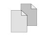

Find Students in Any Period
When you need to locate a student quickly for a feature photo or to retrieve a questionnaire, just click on the Student Locator link. Both first and last names are searchable. The form will autocomplete after typing 3 letters, making empty search results from missplellings less likely. Search results display a student’s schedule over the entire day, with room number and teacher name period by period.
Check Your Missed Deadlines
If students submit copy and photos on time, they make deadline and the respective ladder pages will reflect this. Any unsubmitted work will trigger a missed deadline entry on the Check Missed Deadlines pages, and the offending copy writer or photographer is quickly identified in time to correct the situation.
Page Deadlines
The Page Assignments page will display final page deadlines and cross-reference not only page editors responsible for those deadlines but also every page’s copy and photo contributors. The application does not track page submissions, as this is generally the point at which the printer receives your pages and your staff’s performance is checked against plant deadlines.
Photo Deadlines
The Photo Assignments page will display photo deadlines for each page. It cross-references names of photo contributors and page editors. The photographer will communicate deadline completion by choosing a standout photo from those taken in the course of covering the assignment, duplicating the file so the original is not lost, cropping it in Photoshop to a 4" x 3" thumbnail, and uploading it to the web application. All completed photo assignments will display in chronological order on the View Photos page, complete with thumbnail image, page name, photographer name and date stamp.
Copy Deadlines
The Copy Assignments page will display final copy deadlines for each page. It cross-references names of photo contributors and page editors. The copy writer will compose the story in the Add Story page’s paragraph blocking form. It can then be printed and marked up for revision. A revised story is proof of deadline performance, and the copy block can then be copied and pasted into the page layout.